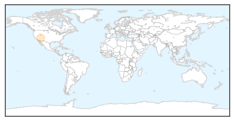

Bubonic Plague
30-Day Web Trend
0 alerts, 0 warnings
30-Day Twitter Trend
0 alerts, 0 warnings

Article Locations
Article Confidences

Top Articles:
Top Tweets:
-
No tweets found for Sep 25, 2014
Cholera
30-Day Web Trend
0 alerts, 0 warnings

30-Day Twitter Trend
0 alerts, 0 warnings

Article Locations

Article Confidences

Top Articles:
- 0.998
- WHO responds to health crises facing war-wracked South Sudan - South Sudan
- 0.987
- Ghana, Business Advice, Jobs, News, Business Directory, Real Estate, Finance, Forms, Auto
- 0.803
- High Level Meeting: South Sudan, 69th Session of UN General Assembly
- 0.802
- MSF Secretary General Addresses UN General Assembly on South Sudan
Top Tweets:
-
No tweets found for Sep 25, 2014